Erhoben am 12.10.2026 zwischen 08:18 und 08:51 Uhr (Europe/Berlin).
Umgebung für alle Bilder: staging.noranotes.ai, angemeldete Sitzung, Workspace „TEST 1“,
Projekte „Benchmark Kinderhaus Sonnenfeld“ und „Neubau Kita Sonnenweg (Testlauf)“ — Schaudaten.
Der Balken „Interner Account — unbegrenzt“ gehört zum internen Konto, nicht zum Funktionsstand.
Auf der Produktivumgebung wurde ausschließlich gelesen.
Anonymisierte Bilder. Sieben Bilder sind nachträglich anonymisiert und unten mit
anonymisiert gekennzeichnet. Ersetzt wurden ausschließlich Firmen-, Personen-
und Ortsangaben durch eindeutig fiktive: Musterbau GmbH, Jonas Muster, Paul Muster,
Beispielprojekt Musterbau, TEST MUSTER, MUSTERSTADT,
Beispielweg 1, 12345 Musterstadt.
Alles andere ist unverändert: Zahlen, Datumsangaben, Prozentwerte, Spaltenbreiten, Status- und
Knopftexte, Meldungen. Die Funktionsnachweise sind dadurch nicht verändert.
Angemeldete Oberfläche
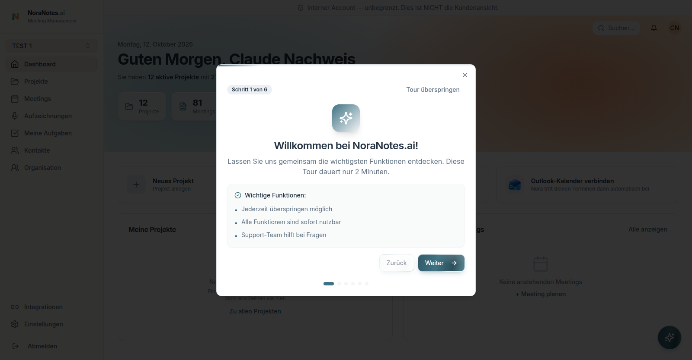
1 — Angemeldete Sitzung auf Staging, Dashboard mit 12 Projekten.
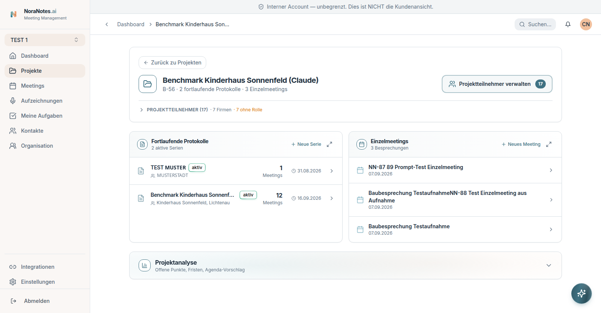
anonymisiert2 — Projektansicht: zwei fortlaufende Protokolle,
drei Einzelmeetings, 17 Projektteilnehmer.
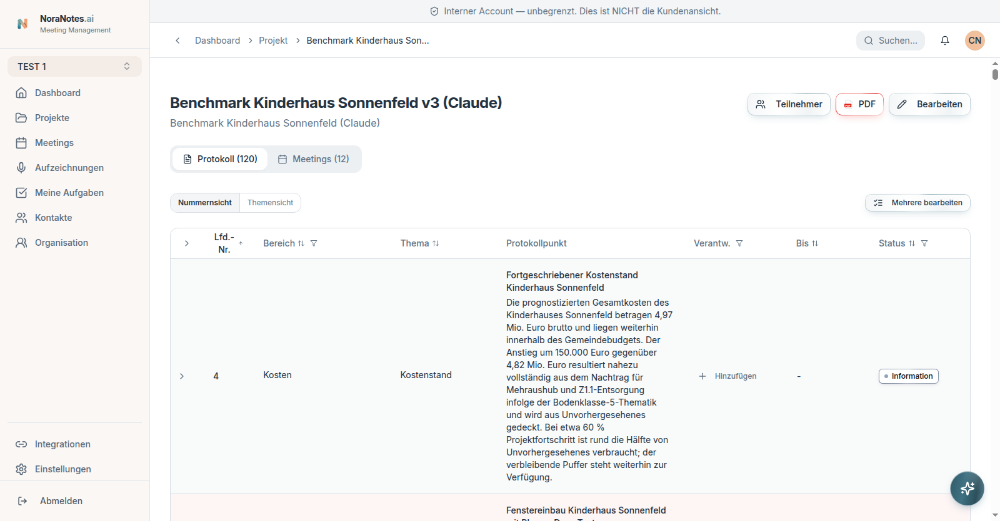
3 — Fortlaufendes Protokoll mit 120 Punkten, Nummern- und Themensicht, PDF-Knopf.
Datum bei Ergänzungen
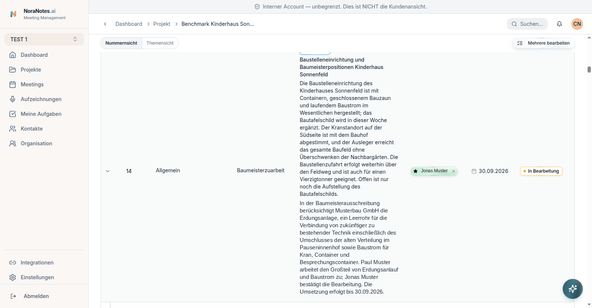
anonymisiert4 — Punkt 14 mit aufgeklapptem Verlauf,
Verantwortlichem, Frist und Status.
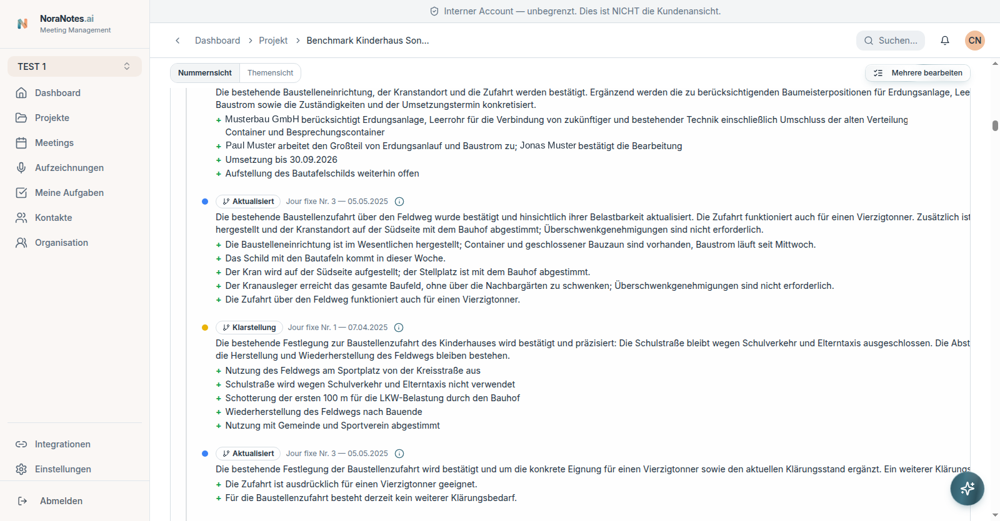
anonymisiert5 — Jede Ergänzung trägt Herkunftsmeeting und Datum
(„Aktualisiert · Jour fixe Nr. 3 — 05.05.2025“), die Art der Ergänzung steht als Etikett daneben
(Aktualisiert, Klarstellung), einzelne Zusätze sind mit „+“ markiert.
PDF-Export und Spaltenbreiten
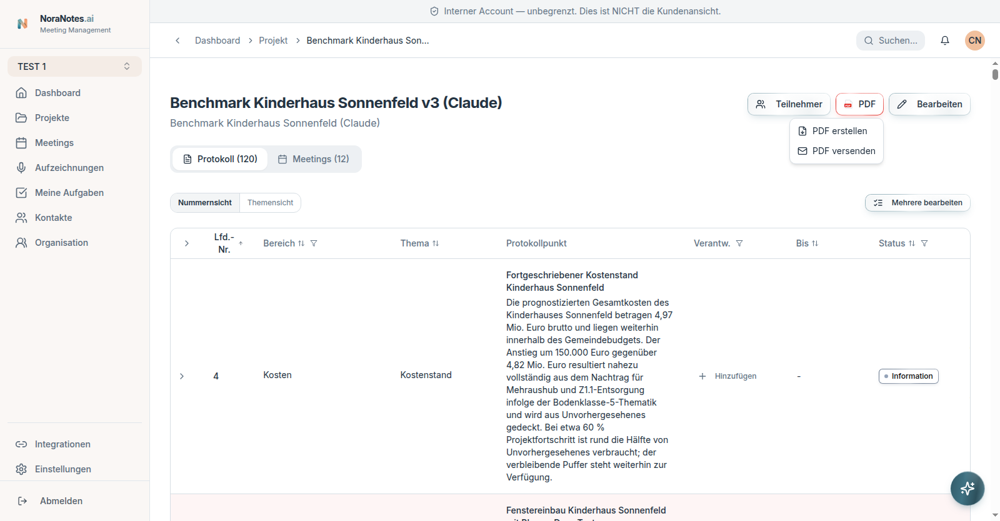
6 — Menü „PDF erstellen“ und „PDF versenden“.
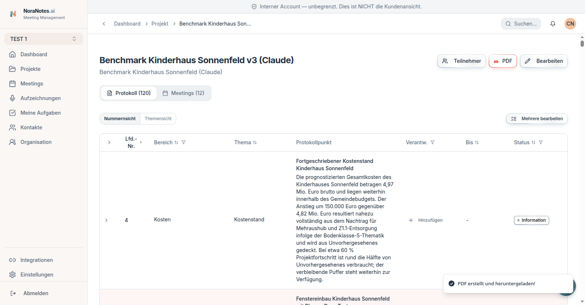
7 — Der Export läuft auf Staging durch: „PDF erstellt und heruntergeladen!“. Die Datei
selbst blieb im Download-Puffer des Automatisierungsbrowsers, ihr Inhalt ist aus diesem Lauf
also nicht belegt.anonymisiert8 — Vorlageneditor mit Live-Vorschau:
Klassisch/Klar/Akzent, A4 hoch und quer, Kopfzeile, Logo, Anschrift.
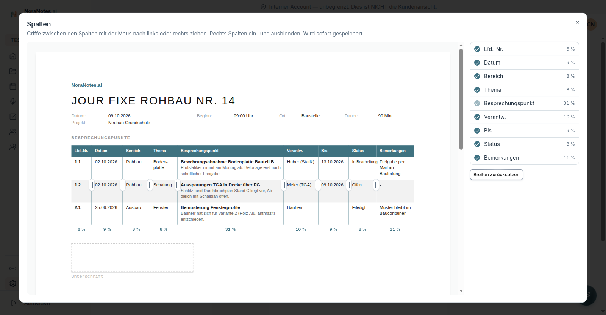
9 — Spaltenbreiten einzeln ziehbar und sofort gespeichert: Lfd.-Nr. 6 %, Datum 9 %,
Bereich 8 %, Thema 8 %, Besprechungspunkt 31 %, Verantw. 10 %, Bis 9 %, Status 8 %,
Bemerkungen 11 %. Spalten ein- und ausblendbar, Breiten zurücksetzbar.
Gerenderte PDF-Seiten (lokaler Renderer, nicht die Oberfläche)
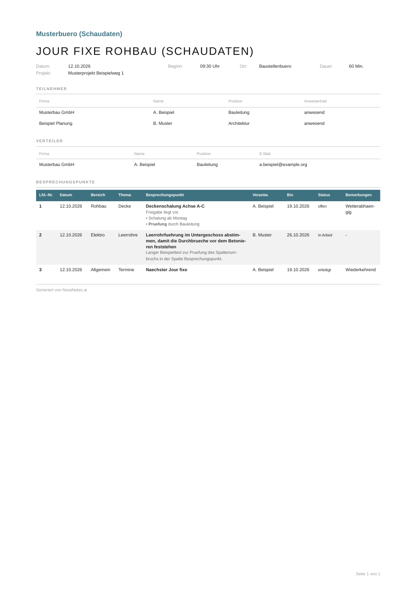
10 — Standardbreiten, gerendert aus derselben Vorlagensteuerung.
PDF öffnen
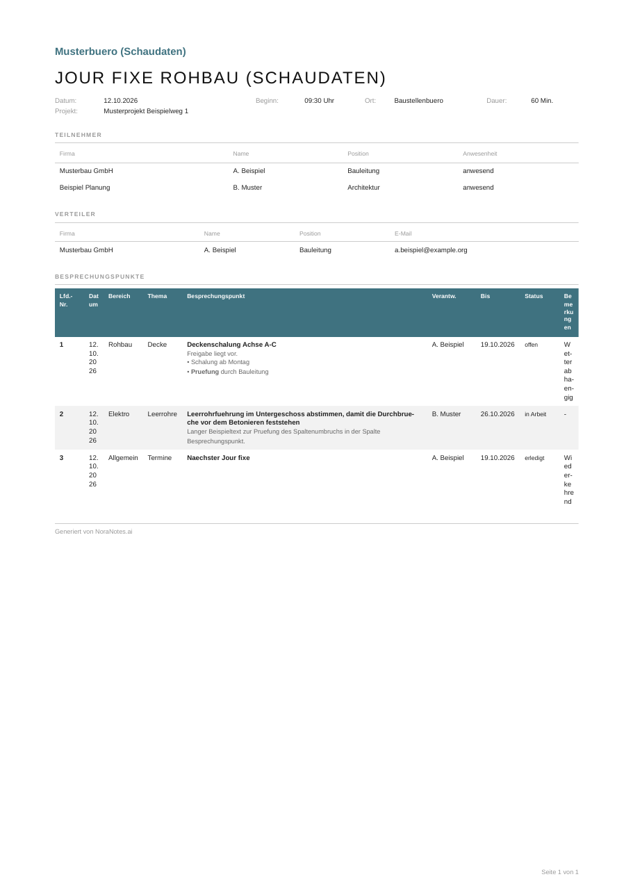
11 — Gegenprobe mit breitem Besprechungspunkt und sehr schmalen Spalten. Sichtbar:
bei 4 % bricht Text zeichenweise um, der Mindestwert schützt nicht vor unlesbaren Spalten.
PDF öffnen
Aufnahme umordnen
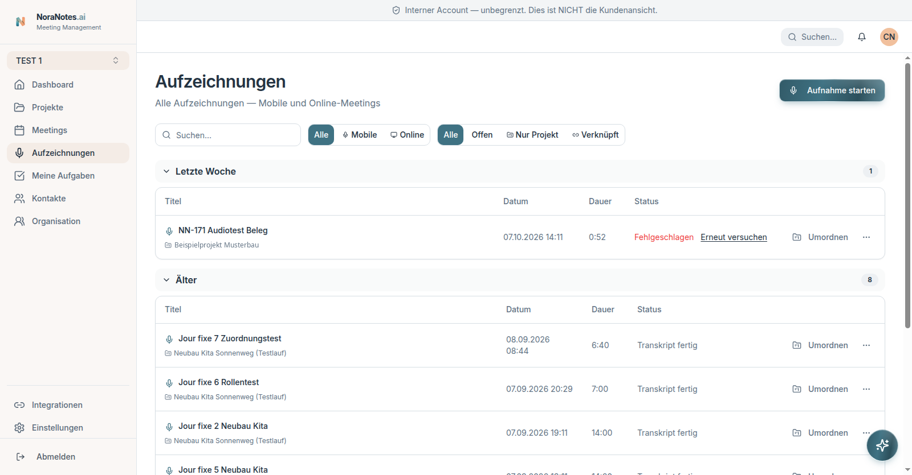
anonymisiert12 — Aufnahmeliste mit Filtern Mobile/Online und
Offen/Nur Projekt/Verknüpft, je Zeile der Knopf „Umordnen“.
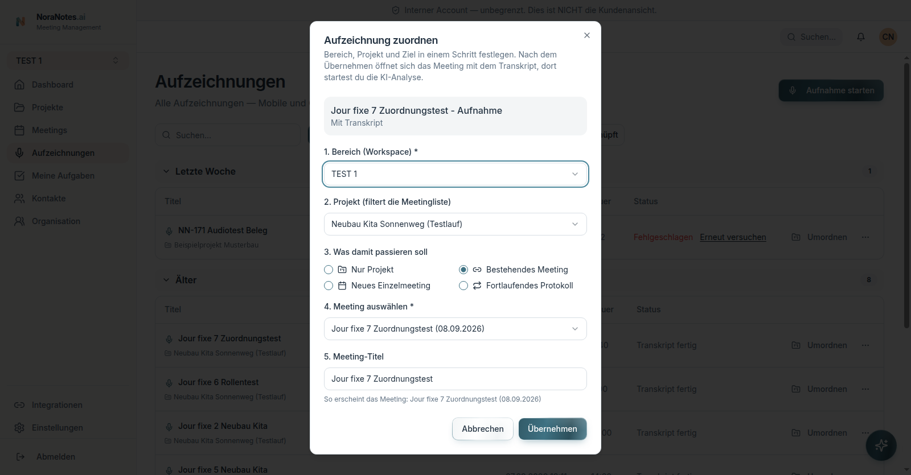
anonymisiert13 — Zuordnung in einem Schritt: Bereich, Projekt
und Ziel, wahlweise nur Projekt, neues Einzelmeeting, bestehendes Meeting oder fortlaufendes
Protokoll.anonymisiert14 — Gesetztes neues Ziel vor dem Übernehmen.
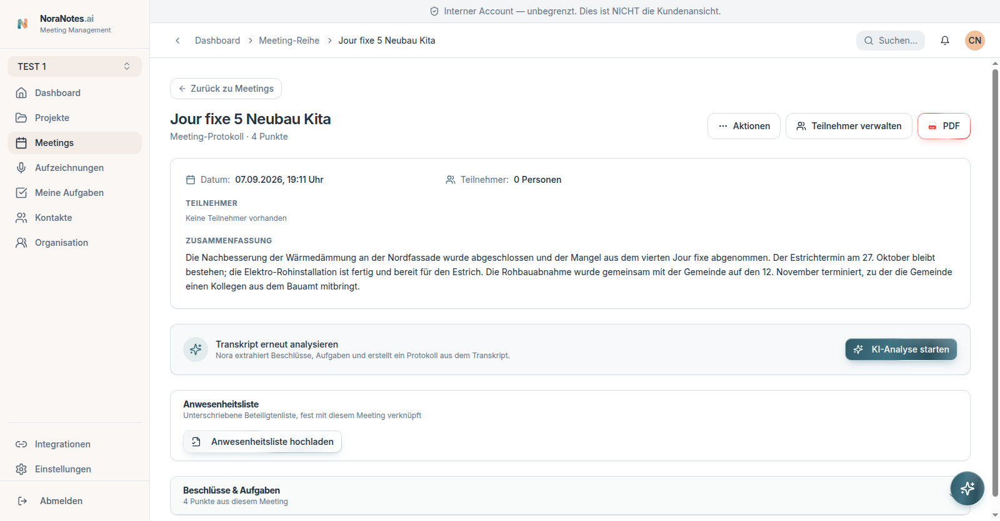
15 — Nach dem Übernehmen öffnet sich das Zielmeeting und zeigt weiterhin seine alten
4 Punkte und seine alte Zusammenfassung. In diesem Durchlauf entstanden keine Duplikate: Quelle
behielt 6 Punkte, Ziel 4. Das ist ein Einzelbefund, keine allgemeine Zusage.
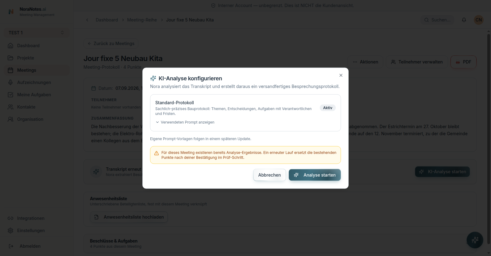
16 — Vor dem Analyselauf warnt die App: bestehende Punkte werden ersetzt, nicht
ergänzt, und erst nach Bestätigung im Prüf-Schritt. Der Lauf wurde abgebrochen, das Ersetzen
ist also nicht durchgespielt.